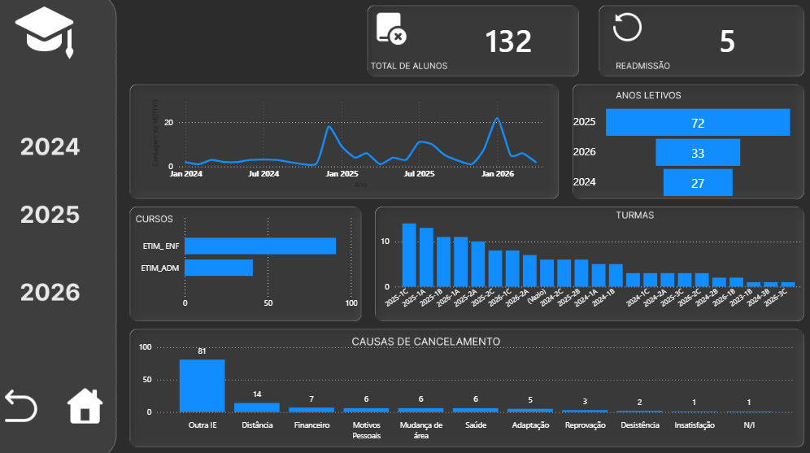
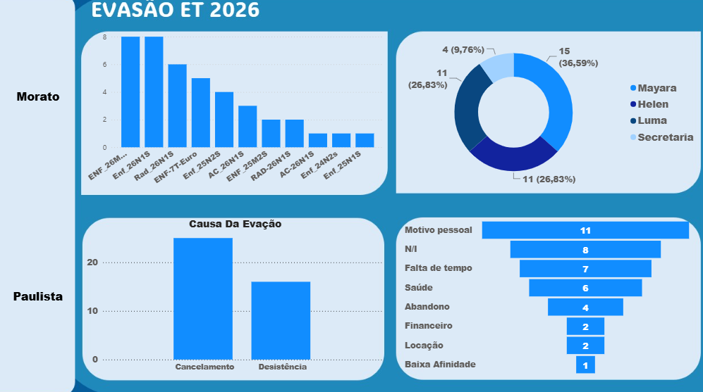
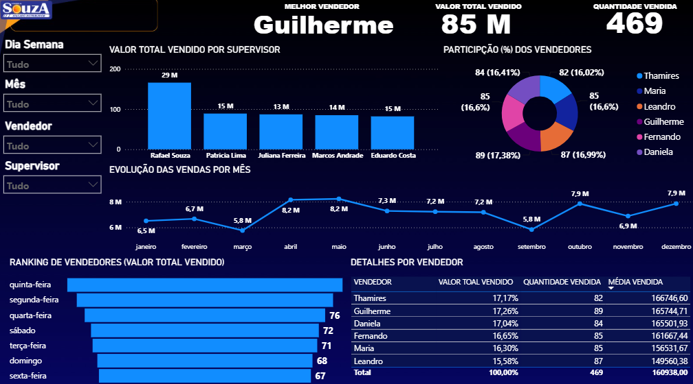

Excel
Organização, tratamento e análise de dados em planilhas.
ANÁLISE DE DADOSOlá, sou Rafael. Estudante de Análise e Desenvolvimento de Sistemas, construindo soluções com dados, dashboards e automação.
Estou no último semestre de Análise e Desenvolvimento de Sistemas e também faço formação em Análise de Dados pelo Instituto Percorre.
Minha experiência como Jovem Aprendiz no Hospital Israelita Albert Einstein fortaleceu minha organização, comunicação e visão de processos. Tenho buscado aplicar esse aprendizado em projetos de Business Intelligence, análise e automação.
Atualmente, estou aprofundando meus conhecimentos em Excel, SQL e Power BI, com interesse em evoluir na área de dados.
Conheça meu trabalho ↗Conhecimentos que venho desenvolvendo e aplicando nos estudos e projetos.
Organização, tratamento e análise de dados em planilhas.
ANÁLISE DE DADOSConsultas e manipulação de dados em bancos relacionais.
BANCO DE DADOSConstrução de dashboards e acompanhamento de indicadores.
BUSINESS INTELLIGENCEEstudos de automação de tarefas e fluxos de trabalho.
AUTOMAÇÃOExploração, interpretação e comunicação de informações.
MÉTODO ANALÍTICOFundamentos de tecnologia e desenvolvimento de sistemas.
TECNOLOGIAProjetos acadêmicos e práticos. Alguns estão em desenvolvimento e serão atualizados conforme evoluírem.

Painel de acompanhamento da evasão escolar, com indicadores de alunos, anos letivos, cursos, turmas e principais causas de cancelamento.

Análise detalhada da evasão, com recortes por unidade, turma, responsáveis e motivos que ajudam a compreender os cancelamentos e desistências.

Dashboard comercial para acompanhar valor vendido, quantidade de vendas, participação dos vendedores, ranking e evolução mensal.
* As imagens são prévias dos dashboards. Clique em qualquer prévia ou no link para abrir a versão interativa no Power BI.
UNICID / Cruzeiro do Sul Virtual · Graduação em andamento
Instituto Percorre · Desenvolvimento de competências em análise de dados
Hospital Israelita Albert Einstein · Apoio administrativo e organização de informações
* Período sujeito à atualização conforme encerramento do contrato.
Estou aberto a oportunidades de entrada nas áreas de Dados, BI e tecnologia, além de conexões e troca de conhecimento.
Entre em contato para conversar sobre oportunidades, projetos e colaboração.